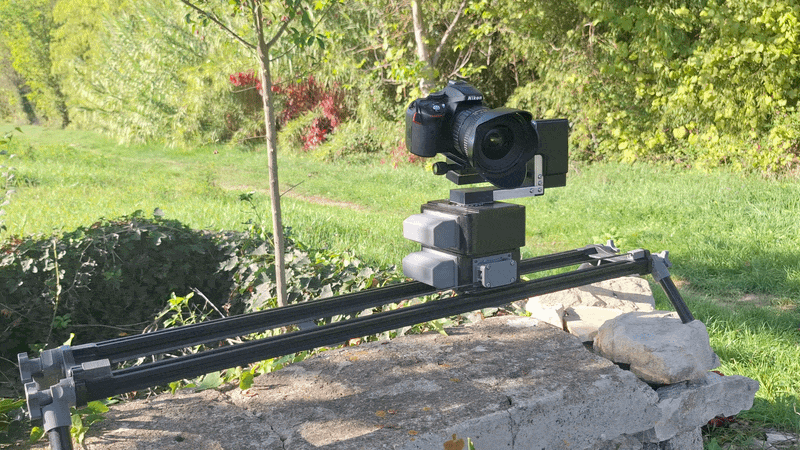
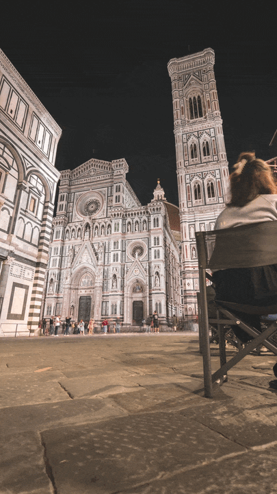
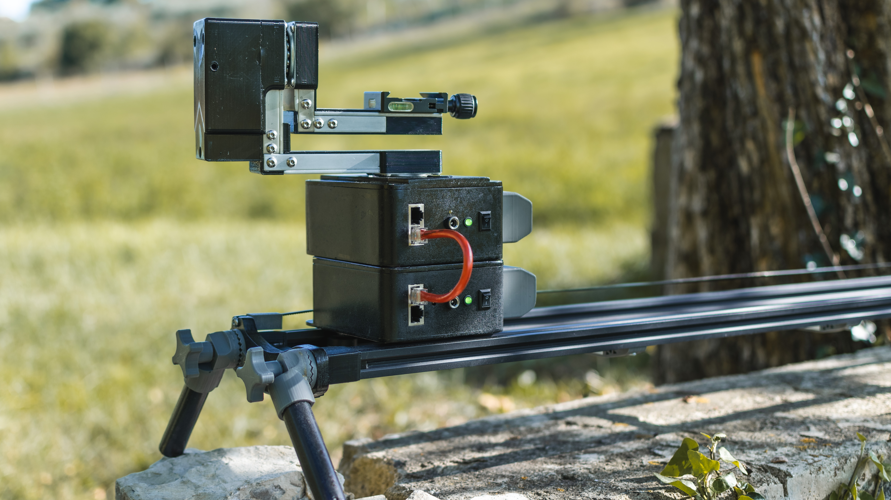
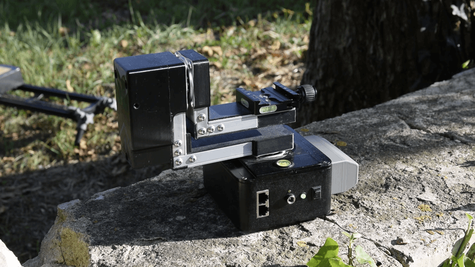
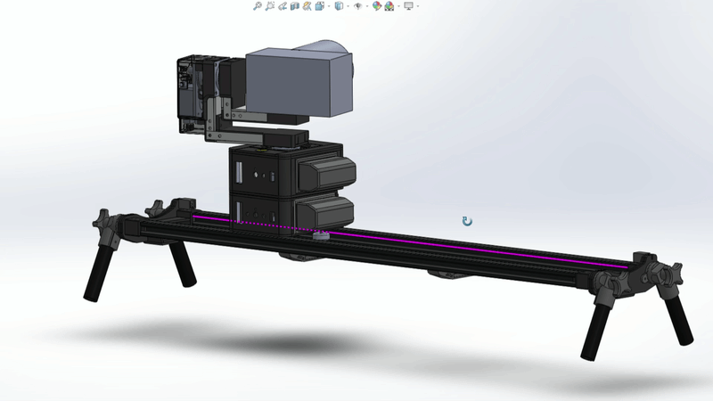
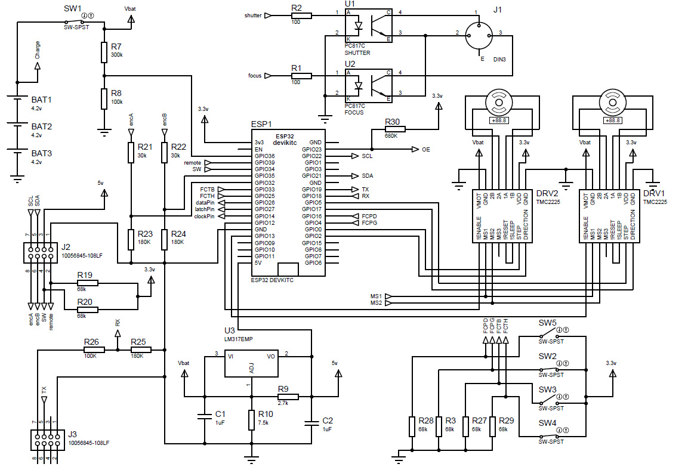
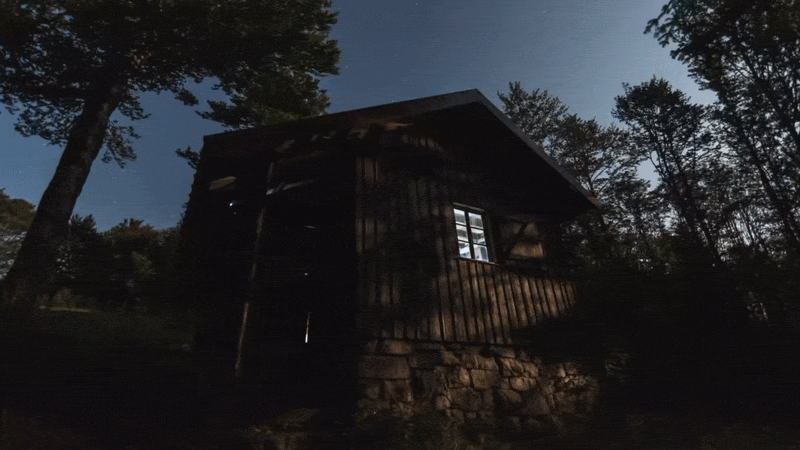
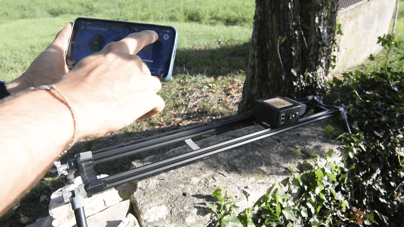

Design and construction of a 3-axis motion control system: slider, pan/tilt head and app
Three years of design, machining and programming to control a camera the way I imagined it.

Why build your own motion control system?
I have been doing timelapse since I bought my first camera. After the intervalometer I had already built, the next step was missing: making the camera move during shooting, adding an artistic dimension to my images, making them unique.
Commercial systems, such as the Syrp Magic Carpet and the Genie Mini II, were my inspiration, thanks to the work of artists like Morten Rustad. Looking for a challenge, I wanted to understand every cog, dive in and build something that corresponds exactly to my needs.
The result of my 3-year project is a modular system made up of two independent but connectable robots: a 90 cm slider and a motorized pan/tilt head, controllable from a custom-developed Android app. The whole took me three years: one year for the slider, two for the head.
The slider: mechanics first

The track is 90 cm long, made of two aluminium profiles (V-slot) spaced 15 cm apart. It is the fourth iteration: the first three, based on round steel tubes, did not satisfy me. At the ends, organically shaped “end caps” provide the rigidity and stability of the robot. A tripod can be screwed on, or legs can be unfolded to place the slider on the ground.
The carriage is the centrepiece: it carries a NEMA 17 stepper motor and an ultra-quiet TMC2225 motor driver, and it is controlled by an Arduino Nano. It moves along a GT2 belt tensioned by a screw system. Its deliberately minimalist front panel brings together an electronic trigger for the camera (3.5 mm jack), charging, a switch, and two Ethernet connectors diverted from their intended use: one for the wired HMI, the other to connect the head.
In its latest version, the slider was given an HC-06 module, connected to the Arduino over a serial link, to enable Bluetooth connectivity, like the motorized head. This addition allows control of the robot to evolve from the wired HMI to a custom Android app.
This robot can move a 3 kg payload at up to 35 mm/s, with a resolution of 0.1 mm.

The pan/tilt head: two years of iterations

This is the hardest part, and I am not a mechanical engineer. Arm flexion, payload, vibrations, stick-slip of the worm gear train in my first version: it took many iterations to find a compromise.
The final version relies on two L-shaped arms, made of aluminium tubes and flat bars machined by hand. The large arm rotates the whole assembly (pan). It is mounted on a housing that echoes the aesthetic of the carriage. The small arm, fixed to the end of the large one, tilts the camera (tilt). Each axis is driven by a small NEMA 17 motor with a 5:1 belt mechanical reduction, controlled in open loop, with limit switches in the arms.
The mechanics of the robot, coupled with the microstepping capabilities of the motor drivers, give a theoretical precision of 0.02° on the movement, for a maximum speed of 10°/s.
One point mattered a great deal: I aligned the camera’s centre of balance with the robot’s axes, which greatly reduces the effort required from the motors.
In total, the head weighs 1.5 kg, can move a balanced payload of 1.5 kg and runs for about 10 hours on battery. A quick-release system allows fast assembly with the slider.
A design conceived in 3D, built with what I had

Everything was drawn in SolidWorks, with load studies and reduction calculations to size the whole.
The parts are machined on the lathe, on the CNC and by hand, or 3D-printed in PETG for its mechanical strength (cable routing, gearbox mounts). The PVC elements come from salvaged tubes: split lengthwise, heated, flattened into sheets, then cut and glued. The same spirit as for my Nixie clock: making something beautiful with what you have.
Electronics and embedded software

The circuits are made in-house. The slider runs around an Arduino Nano, the head around an ESP32, which is more powerful and has native Bluetooth. Both share the same home-made 12 V quick-release battery (inspired by power drills), which I also use on all my other projects.
The head’s program, in C++, is about 5,000 lines and manages several processes in parallel: motors, interface, communication, camera, status indicators. When the head is connected to the slider, it becomes the master and the slider becomes the slave. They talk over a UART link with a protocol I designed, inspired by Modbus: frames, function codes, checksums, acknowledgements. The slider then behaves like a small PLC that receives orders (movements, positions, battery level) and reports back on them.
The app: from LCD screen to smartphone

Initially, control was done through an LCD screen and a rotary encoder on the front panel. The Android app takes over these functions with the comfort of a smartphone. I developed it as part of a semester project at engineering school, with the invaluable help of my friends Thomas D, Julien C and Rémi J.
It is mainly developed in Java, on Android Studio. Its interface is reminiscent of a drone remote control, with virtual joysticks and menus. You define key positions, the speed and duration of the movement, then the mode: shoot-move-shoot or smooth movement, timelapse or video. There is even a panorama feature to reconstruct a 360° photo with a conventional camera.
And above all, the app does not drive the robot live: it transmits parameters, and it is the ESP32’s algorithms that build the camera’s trajectory. Once configured, the robot can be disconnected from the phone and runs its sequence on its own.

What I take from it
This ambitious project forced me to connect disciplines that I had been practising separately: mechanics, electronics, embedded programming, communication protocols, mobile app development. It also taught me to iterate without getting attached to a solution: three attempts before the right one, a worm gear abandoned, a wired interface replaced by Bluetooth.
Gallery
Photos and timelapses made with the robot.